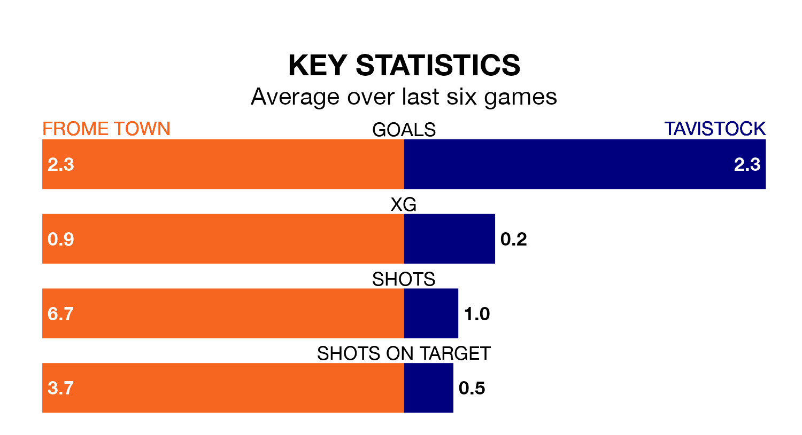

Frome Town host Tavistock on Saturday at the AlderSmith Stadium in the Southern League Division One South.
In their last league match, on February 16, Frome beat Westbury United 3-2 away.
Tavistock also won, 1-0 away at Melksham Town on February 10.
With 53 goals in 24 games so far this season, Frome are the league's highest scorers with 2.2 goals per game. And they are conceding fewer than average, letting in 33 goals at a rate of 1.4 per game.
Tavistock are also above average scorers, with 1.9 goals per game, compared to a league average of 1.6. They have conceded 2.0 goals per game.
Town are second in the table after 24 games, of which they have won 15 and drawn four, earning 49 points.
The away team are 11 places behind the hosts in 13th, with 10 wins and two draws putting them on 32 points.
In the last five years, Frome and Tavistock have played each other on four occasions. Tavistock won all of them.
On average, Frome scored 1.5 goals and Tavistock 4.0 in those matches.
Their last meeting was on January 17, when Tavistock won 6-2 at home.
Frome are in reasonable form in the Southern League Division One South, with four wins and two losses from their last six games.
And also with four wins and two losses over that period, Tavistock's form is identical – they have both taken 12 points from 18.
Updated: 10:08 (UTC), 23/02/24